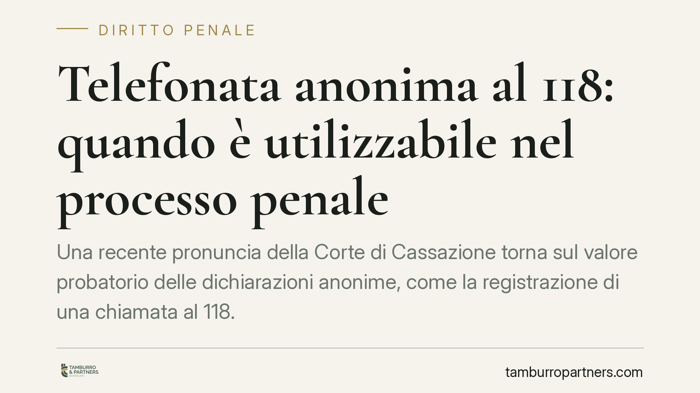

Telefonata anonima al 118: quando è utilizzabile nel processo penale
Una recente pronuncia della Corte di Cassazione torna sul valore probatorio delle dichiarazioni anonime, come la registrazione di una chiamata al 118. Il principio è netto: quel contenuto non prova ciò che l'anonimo racconta, ma può confermare circostanze oggettive già dimostrate con altre prove. Una distinzione sottile che incide su strategie difensive e istruttoria dibattimentale.

Il caso e il principio
La questione riguarda l'utilizzabilità nel processo penale di un documento contenente dichiarazioni provenienti da persona non identificabile: nello specifico, la registrazione di una telefonata anonima al servizio di emergenza 118.
La Corte distingue due piani. Il primo è il contenuto narrativo della dichiarazione: ciò che l'anonimo afferma sui fatti. Questo non può fondare la prova, perché proviene da fonte non verificabile e sottratta al contraddittorio. Il secondo è il fatto storico della dichiarazione stessa: la circostanza che, in un dato momento, qualcuno abbia effettuato quella chiamata. Questo dato oggettivo può essere valorizzato per confermare elementi già accertati per altra via — ad esempio l'orario di un intervento o la presenza di soccorsi in un luogo.
> Nota: il numero e l'anno della pronuncia citata dalla fonte richiedono verifica, poiché indicati con anno non ancora concluso. Il principio di diritto illustrato è comunque coerente con l'orientamento consolidato in materia.
Inquadramento normativo
Il riferimento naturale è l'art. 240 c.p.p., il cui comma 1 vieta l'acquisizione dei documenti che contengono dichiarazioni anonime, salvo che costituiscano corpo del reato o provengano comunque dall'imputato. La *ratio* del divieto è chiara: una dichiarazione anonima è per definizione non verificabile e non consente all'imputato di confrontarsi con la fonte, cioè di esercitare il contraddittorio.
Occorre però una precisazione. L'art. 240 c.p.p., dopo la riforma introdotta dalla L. 281/2006, disciplina anche i documenti e i supporti relativi a intercettazioni illegali. La parte che qui interessa — i documenti anonimi — resta ancorata al comma 1.
Va inoltre segnalata una cautela di inquadramento. La qualificazione della chiamata di emergenza come «documento anonimo» ex art. 240 c.p.p. non è pacifica. Parte della giurisprudenza inquadra la registrazione della chiamata al 118 tra le prove documentali ai sensi dell'art. 234 c.p.p., oppure come mera fonte di notizia di reato. La collocazione incide sul regime di utilizzabilità: per questo l'analisi va condotta caso per caso, senza automatismi.
Implicazioni pratiche
Per l'imputato e la sua difesa la distinzione è un'arma a doppio taglio. Da un lato, il contenuto accusatorio dell'anonimo non può essere speso come prova diretta della responsabilità. Dall'altro, il fatto della chiamata può essere usato dall'accusa come tassello di riscontro, se già esistono altri elementi. La difesa deve quindi presidiare due fronti: contestare l'uso probatorio del racconto e verificare che il «fatto storico» non venga surrettiziamente caricato di valore narrativo.
Per la parte civile, che spesso ha interesse a sostenere la ricostruzione accusatoria, vale il limite speculare: non si può fondare la domanda risarcitoria sul contenuto della dichiarazione anonima, ma solo su prove autonome.
In sede dibattimentale il crinale è pratico: distinguere quando il giudice sta usando la chiamata come conferma di un dato oggettivo e quando, invece, ne sta traendo elementi sul merito dell'accusa. Nel secondo caso l'utilizzabilità va contestata.
Cosa fare in concreto
- Verificate l'inquadramento attribuito alla chiamata negli atti: documento anonimo ex art. 240, prova documentale ex art. 234 o semplice notizia di reato. Il regime cambia di conseguenza.
- Eccepite l'inutilizzabilità del contenuto narrativo appena la chiamata anonima faccia ingresso nel fascicolo, chiedendo che l'eccezione sia messa a verbale.
- Circoscrivete l'uso ammesso del dato: pretendete che il fatto storico della chiamata resti confinato al riscontro di circostanze oggettive già provate aliunde.
- Ricostruite la catena probatoria: individuate quali elementi sostengono l'accusa a prescindere dalla chiamata, per isolare il reale peso dell'anonimo.
- Documentate ogni contestazione nel verbale d'udienza, così da conservare il motivo per l'eventuale impugnazione.
Sul piano informativo, ogni acquisizione di questo tipo merita un vaglio tecnico fin dalle prime fasi procedimentali: la qualificazione giuridica del supporto e del suo contenuto orienta l'intera strategia.
---
*Contributo informativo a cura di Tamburro & Partners - Avv. Giuseppe Tamburro. Non costituisce parere legale.*
Ogni condominio ha una storia a sé.
Se gestisci un'amministrazione e vuoi un confronto su una specifica questione condominiale, scrivi allo studio. Ti rispondiamo entro un giorno lavorativo.